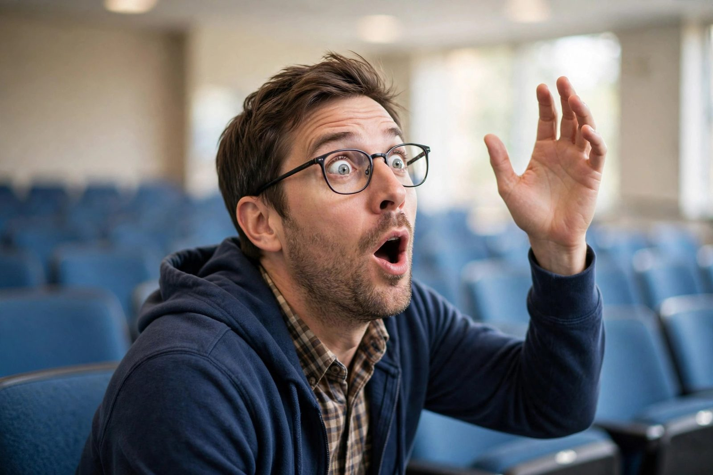

Emergency wake-up recovery lines

It happens to the best of us. One moment you're performing a flawless thoughtful-nod sequence; the next, your own snort-cough startles you upright and your kid is mid-sentence, looking directly at you. This is the moment the whole guide series has been building toward. Do not panic. You have a toolkit. Deploy it with confidence.
Tier 1: The classics
These work in almost any situation because they're true — you genuinely do wish you'd caught it, and kids can smell fake enthusiasm a mile away.
- "Say that last part again — it was so good." The all-timer. It flatters, it buys you a recap, and it makes you sound like a fan instead of a fossil. Only downside: they may actually repeat it, so you need to stay awake for the encore.
- "I was just thinking about what you said — go on." Reframes the drift as deep reflection. Pairs well with a slow nod.
- "Hold on, that was my favorite part so far — back up a little." Enthusiastic, specific-sounding, and completely content-free. Safe for any topic, from volcano models to interpretive dance.
Tier 2: The physical misdirection
Sometimes words aren't enough — you need props and choreography.
- The stretch-and-clap. Sit bolt upright, arms up, big stretch, then launch into applause like the section just ended. If it didn't actually end, smooth it into an enthusiastic single clap and a "Yes! Exactly!" Nobody will question the single-clap enthusiast. They look so supportive.
- The water bottle. Take a long, deliberate drink. It explains the slow blink, the head movement, the general confusion. Hydrated parents are alert parents — or at least, they look like they might be.
- The phone glance. Look at your phone with mild concern, then put it away and give your kid a nod that says crisis averted, I'm all yours. Use sparingly — the "I'm important and busy" parent is not the vibe we're going for.
Tier 3: Advanced honesty
Here's a secret the other tiers won't tell you: with older kids, a little honest humor goes further than any cover story.
- "I blinked and missed a whole chapter — catch me up?" Delivered with a grin, this is disarming. Older kids and teens especially respect it, because they have also been tired in school and they know exactly what happened.
- "Long day. Tell me the best part again — I want the real version, not the highlight reel." This one reframes your lapse as a demand for quality. Cheeky, but it works.
- "Okay, I nodded off. But I'm here, and I'm listening now." The nuclear option. Use it rarely, mean it completely. Some moments are too important for theater.
What NOT to do
- Don't fake the details. "Loved the part about the [trailing off]..." is a trap. Kids will test you. You will fail. The truth is kinder.
- Don't blame the content. "That was a bit long" is an insult to someone who practiced for weeks. The presentation was great. You were tired. Those are separate facts.
- Don't over-apologize. One honest line beats five minutes of groveling. Apologize, listen, move on.
The real recovery
Here's the thing about all these lines: they only work because the kid can see you trying. The flattery, the honesty, the clap — what actually lands is the fact that you cared enough to recover gracefully instead of just letting your head stay down. After the event, ask one real question about the presentation. Just one. "What was your favorite part to work on?" is perfect. Listen to the answer. That's the part they'll remember — not that you drifted, but that you asked.